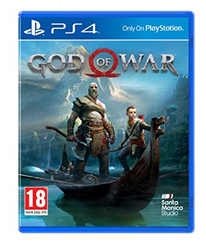
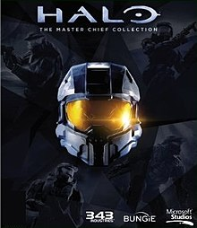
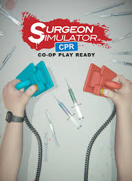

I'm a huge gamer myself, and I'd like to list some of my favorite gaming systems, as well as a game to go with each.
Here is a chart of my favorite gaming systems and their ranking:
| Rank | System |
|---|---|
| #1 | PC |
| #2 | PS4 |
| #3 | Xbox One |
| #4 | Nintendo Switch |
Image from: CyberPowerPC
This one may seem pretty generic, but I've always been a fan of PC gaming over anything on a console. You can get higher framerates and better graphics than console ports, and access to most games (except console exclusives, looking at you Sony).
I also really enjoy the keyboard and mouse control over a controller, except for a few select games (such as fighting games where button mashing is essential).
The game that I most enjoy on PC is Battlefield One. I think that most shooter and FPS games handle much better on PC due to mouse control, which allows for finer tuning. However, this game in particular I love the most on PC, as I own it on both console and PC.

Image from: Wikipedia
Image from: Playstation
I really enjoy the Playstation 4's UI and the way looks and feels. The nice colors, as well as the sounds and little details to go with the UI make it all very enjoyable.
My favorite game on the PS4 is the recent God of War. I had lots of fun playing it and I'm still putting time into it to this day.
Image from: Amazon
Image from: Amazon
I've always been an Xbox fan. I own the original Xbox, the 360, and the Xbox One. The controllers are nice to use, despite their large size. Most of my games were on the Xbox consoles as I was growing up, so it holds some nostalgic value as well.
In the end though, I feel that the PS4 beats the Xbox in terms of UI and how user friendly it is. It also feels that as of late they haven't been able to keep up, so that's why they get the third place spot.
One of my favorite exclusives for the Xbox console is the Halo series. The Master Chief Collection was a lot of fun for me to play, being able to go back to old games with new graphics and music. It was a lot of fun.
Image from: Wikipedia
Image from: Wikipedia
I'm putting the Switch as last place in my chart. Why? Because I was never able to be a big Nintendo fan growing up, or even now. The only Nintendo console I owned was a Wii, and I never even got to play some of the good games for it.
I also never got the chance to get into or play Pokemon, so I could never really identify with Nintendo as a whole. That is why I'm placing it at the last place, as that's how I feel about it.
I did get to play a bit of the Switch though, and currently my favorite game on it is Surgeon Simulator: CPR, the Surgeon Simulator port for the Switch.
Image from: Nintendo